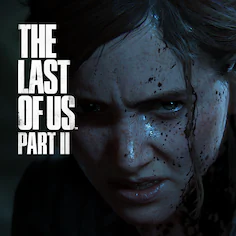

The Last of Us: Part II
The Last of Us 2 és la seqüela de The Last of Us, un dels jocs més aclamats de la consola PS3, que va aparèixer el
2015 a PS4 en versió remasteritzada. Aquesta continuació ha estat anunciada a l'esdeveniment PlayStation Experience de desembre de 2016,
generant grandíssimes expectatives entre els jugadors.
14.99€